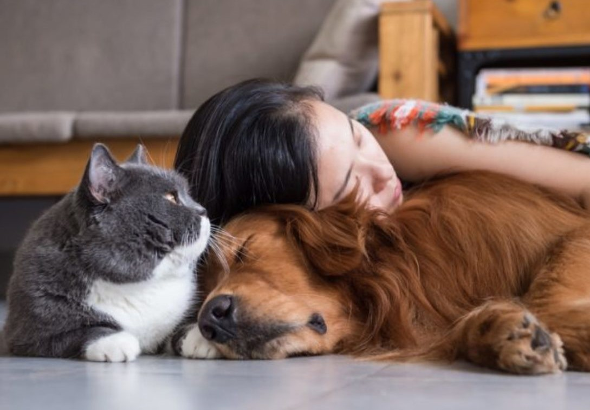

Somos una organización con la finalidad de ayudar a los
animalitos a encontrar dueños responsables, que les puedan
dar todo el amor y cariño que necesiten.
Contamos con gente capacitada para el cuidado de los
animalitos, además tenemos comida para los animalitos gracias
a las donaciones que millones de personas realizan al año.
Ayudanos adoptando, donando o compartiendo nuestra página
para que podamos seguir ayudando así a estos animalitos y
encontrarles un hogar.
